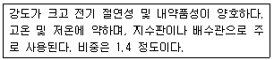
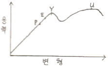
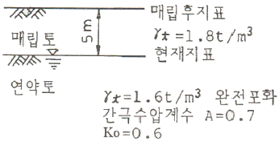
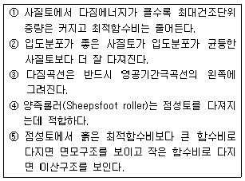
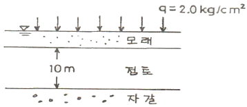
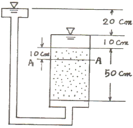
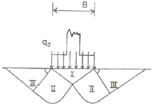
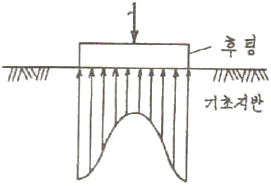
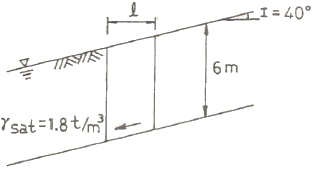

건설재료시험기사 (2009-05-10 기출문제)
1과목: 콘크리트공학
1. 다음 4조의 압축강도 시험결과 중 변동계수가 가장 큰 것은?
- 198, 195, 210, 197
- 202, 190, 190, 218
- 210, 2⑤, 185, 200
- 189, 200, 196, 215
(정답률: 70%)

2. 다음 서중(暑中) 콘크리트에 대한 설명 중 옳지 않은 것은?
- 소요의 단위수량이 증가하게 된다.
- 운반 중 슬럼프 저하가 크다.
- 타설 후의 응결이 빠르며 수화열에 의해 온도가 상승된다.
- 장기 강도가 증진된다.
(정답률: 83%)
3. 외기온도가 25℃를 초과하고 지연제의 사용 등 특별한 조치를 하지 않은 일반콘크리트에서 비비기에서 치기가 끝날 때까지 허용되는 최대시간은?
- 1.5시간
- 2시간
- 2.5시간
- 3시간
(정답률: 100%)
4. 콘크리트 배합시에 잔골재를 넣지 않고 10~20mm 정도의 입도를 갖는 굵은 골재만을 넣어 굵은 골재의 표면에 시멘트 페이스트만을 피복시켜 성형하여 만든 콘크리트에 대한 설명으로 틀린 것은?(오류 신고가 접수된 문제입니다. 반드시 정답과 해설을 확인하시기 바랍니다.)
- 기포콘크리트라 한다.
- 내열성이 우수하다.
- 건조수축이 작다.
- 시공성이 우수하다.
(정답률: 27%)
5. 프리스트레스트 콘크리트의 그라우트의 품질 기준으로 옳지 않은 것은?
- 블리딩률은 5%이하를 표준으로 한다.
- 팽창성 그라우트에서의 팽창률은 0~10%를 표준으로 한다.
- 물-시멘트비는 45%이하로 한다.
- 염화물이온의 총량은 0.3kg/m3 이하를 원칙으로 한다.
(정답률: 77%)
6. 섬유보강콘크리트용 섬유로서 갖추어야 할 조건으로 잘못 된 것은?
- 섬유의 탄성계수는 시멘트 결합재 탄성계수의 1/4이하 일 것
- 섬유와 시멘트 결합재 사이의 부착성이 좋을 것
- 섬유의 인장강도가 충분히 클 것
- 형상비가 50 이상일 것
(정답률: 71%)
7. 크리프(creep)에 대한 설명으로 틀린 것은?
- 대기 중에 습도가 높을수록 크리프는 크다.
- 단위 시멘트량이 많을수록 크리프는 크다.
- 작용하는 응력의 크기에 비례한다.
- 장기간에 걸쳐 진행한다.
(정답률: 70%)
8. 잔골재율에 대한 설명 중 틀린 것은?
- 골재 중 5mm체를 통과한 부분을 잔골재로 보고, 5mm체에 남는 부분을 굵은골재로 보아 산출한 잔골재량의 전체 골재량에 대한 절대용적비를 백분율로 나타낸 것을 말한다.
- 잔골재율이 어느 정도보다 작게 되면 콘크리트가 거칠어지고, 재료분리가 일어나는 경향이 있다.
- 잔골재율은 소료의 워커빌리티를 얻을 수 있는 범위에서 단위수량이 최대가 되도록 한다.
- 잔골재율을 작게하면 소요의 워커빌리티를 얻기 위한 단위수량이 감소되고 단위시멘트량이 적게 되어 경제적이다.
(정답률: 69%)
9. 다음 중 혼합시멘트가 아닌 것은?
- AE시멘트
- 고로슬래그시멘트
- 실리카시멘트
- 플라이애시시멘트
(정답률: 65%)
10. PS강재에 요구되는 일반적인 특성을 설명한 것으로 옳지 않은 것은?
- 인장강도가 높아야 한다.
- 릴랙세이션이 커야 한다.
- 어느정도의 늘음과 인성이 있어야 한다.
- 항복비가 커야 한다.
(정답률: 89%)
11. 굳은 콘크리트의 압축강도 시험에 대한 설명으로 잘못된 것은?
- 공시체 양생은 20±2℃에서 습윤상태로 양생한다.
- 굵은 골재 최대 치수가 50mm인 경우에는 ø10×20cm의 공시체를 사용한다.
- 몰드는 떼는 시기는 채우기가 끝나고 나서 16시간 이상 3일 이내로 한다.
- 하중을 가하는 속도는 압축 응력도의 증가율이 매초(0.6±0.4)MPa이 되도록 한다.
(정답률: 62%)
12. 수중콘크리트의 시공방법이 아닌 것은?
- 트레미에 의한 시공
- 콘크리트펌프에 의한 시공
- 밑열림상자에 의한 시공
- 슈트에 의한 시공
(정답률: 71%)
13. 거푸집 및 동바리의 해체 시 주의할 점 중 옳지 않은 것은?
- 일반적으로 거푸집 및 동바리는 콘크리트가 자중 및 시공 중에 가해지는 하중에 충분히 견딜만한 강도를 가질 때까지 해체해서는 안된다.
- 거푸집을 해체하는 순서는 하중을 많이 받는 부분을 먼저 떼어내고, 그 다음에 남은 중요하지 않은 부분을 떼어내야 한다.
- 슬래브 및 보의 밑면은 콘크리트의 압축강도 크기가 설계기준강도의 2/3 이상이고, 14MPa 이상이면 거푸집을 떼어낼 수 있다.
- 확대기초, 보옆, 기둥 등의 측벽은 콘크리트의 압축강도 크기가 5MPa이상이면 거푸집을 떼어낼 수 있다.
(정답률: 94%)
14. 알칼리 골재반응에 대한 설명 중 잘못된 것은?
- 주로 포틀랜드시멘트 속의 알칼리 성분과 골재 중에 있는 실리카와의 화학반응으로 나타난다.
- 콘크리트가 과도하게 팽창하여 균열이 발생하는 현상이 나타난다.
- 광물의 종류에 따라 알칼리-실리카 반응, 알칼리-탄산염 반응, 알칼리-실리케이트 반응으로 대별할 수 있다.
- 반응성 골재를 사용할 경우에는 1.0% 이하의 저알칼리형 시멘트를 사용한다.
(정답률: 74%)
15. 콘크리트의 다지기에서 내부진동기를 사용하여 다짐하는 방법에 대한 설명으로 옳지 않은 것은?
- 진동다지기를 할 때에는 내부진동기를 하층의 콘크리트 속으로 0.1m정도 찔러 넣는다.
- 1개소당 진동시간은 5~15초로 한다.
- 내부진동기의 삽입간격은 일반적으로 1m 이상으로 하는 것이 좋다.
- 내부진동기는 콘크리트를 횡방향으로 이동시킬 목적으로 사용해서는 안된다.
(정답률: 89%)
16. 콘크리트의 설계기준강도가 28MPa일 때 배합강도는? (단, 압축강도의 시험횟수가 14회 이하인 경우)
- 29.2 MPa
- 35.0MPa
- 36.5MPa
- 38.0MPa
(정답률: 79%)
17. 현장에서 콘크리트의 재료를 계량할 때 1회 계량분에 대해 허용오차 기준으로 틀린 것은?
- 물은 1% 이하로 한다.
- 시멘트는 1% 이하로 한다.
- 혼화제는 3% 이하로 한다.
- 골재는 2% 이하로 한다.
(정답률: 88%)
18. 콘크리트의 동결융해에 대한 설명 중 틀린 것은?
- 다공질의 골재를 사용한 콘크리트는 일반적으로 동결융해에 대한 저항성이 떨어진다.
- 콘크리트의 표층박리(scaling)는 동결융해작용에 의한 피해의 일종이다.
- 동결융해에 의한 콘크리트의 피해는 콘크리트가 물로 포화되었을 때 가장 크다.
- 콘크리트의 초기 동결융해에 대한 저항성을 높이기 위해서는 물-시멘트비를 크게 한다.
(정답률: 92%)
19. 다음 중 시험배합에 따르는 일반적인 콘크리트 배합설계순서 중 가장 먼저 해야할 것은?
- 사용재료의 품질시험을 실시한다.
- 굵은 골재의 최대치수와 굳지않은 콘크리트의 슬럼프 및 공기량을 결정한다.
- 물-시멘트비를 결정한다.
- 잔골재량 및 굵은 골재량을 결정한다.
(정답률: 58%)
20. 한중(寒中) 콘크리트에 사용하는 재료의 설명 중 옳지 않은 것은?
- 물-시멘트비는 원칙적으로 60% 이하로 한다.
- 시멘트는 냉각되지 않도록 하고, 사용시 직접 가열하여 온도 저하를 방지하는 것이 좋다.
- 골재는 시트 등으로 덮어서 동결이 방지되도록 저장해야 한다.
- 한중콘크리트에는 AE콘크리트를 사용하는 것을 원칙으로 한다.
(정답률: 87%)
2과목: 건설시공 및 관리
21. 불도저(bulldozer) 작업의 경우 다음의 조건에서 본바닥 토량으로 환산한 1시간당 토공 작업량(m3/h)은? (단, 1회 굴착 압토량은 느슨한 상태로 3.0m3, 작업효율은 0.6, 토량변화율(L)dms 1.2, 평균 압토 거리는 30m, 전진속도는 30m/분, 후진속도는 60m/분, 기어변속시간은 0.5분)
- 45
- 34
- 20
- 15
(정답률: 60%)
22. 타이어 도저(Tire Dozer)의 장점에 대한 설명 중 틀린 것은?
- 함수비가 많은 점토질에 유리하다.
- 비교적 고속으로 운행할 수 있다.
- 제설(除雪) 작업에 유리하다.
- 운반거리가 긴 곳에 유리하다.
(정답률: 85%)
23. 아스팔트 포장의 끝손질 다짐(완성전압)에 가장 적합한 로울러(Roller)는?
- 탠덤 로울러(Tandem Roller)
- 머캐덤 로울러(Macdam Roller)
- 타이어 로울러(Tire Roller)
- 탬핑 로울러(Tamping Roller)
(정답률: 69%)
24. 사질토를 절토하여 45000m3의 성토구간을 다짐 성토하려고 한다. 사질토량 토량 변화율이 L=1.2, C=0.9일 때 절취 토량과 운반토량은?
- 절취토량:4⑤00m3, 운반토량:48600m3
- 절취토량:45000m3, 운반토량:54000m3
- 절취토량:50000m3, 운반토량:54000m3
- 절취토량:50000m3, 운반토량:60000m3
(정답률: 79%)
25. 모터 그레이터(motor grader) 규격의 일반적인 표현 방법은?
- 총장비의 중량(ton)
- Blade의 길이(m)
- 버킷용량(m3)
- 보울의 용량(m3)
(정답률: 80%)
26. Preloading공법에 대한 설명 중 적당하지 못한 것은?
- 구조물의 잔류 침하를 미리 막는 공법의 일종이다.
- 도로, 방파제 등 구조물 자체가 재하중으로 작용하는 형식이다.
- 공기가 급한 경우에 적용한다.
- 압밀에 의한 점성토지반의 강도를 증가시키는 효과가 있다.
(정답률: 93%)
27. 사이폰 관거(syphon drain)에 대한 다음 설명 중 옳지 않은 것은?
- 암거가 앞뒤의 수로바닥에 비하여 대단히 낮은 위치에 축조한다.
- 일종의 집수암거로 주로 하천의 복류수를 이용하기 위하여 쓰인다.
- 용수, 배수, 운하 등 성질이 다른 수로가 교차하지만 합류시킬 수 없을 때 사용한다.
- 다른 수로 혹은 노선과 교차할 때 사용된다.
(정답률: 67%)
28. 터널굴착에 대한 다음 설명 중 틀린 것은?
- 전단면 굴착공법은 도갱을 하지 않고 전단면을 한꺼번에 굴착하는 공법으로 지질이 안정되어 있는 지반에 이용된다.
- 도갱은 버력 운반로, 용수의 처리, 지질의 확인을 목적으로 설치한다.
- 상부 반단면공법에서 하반부의 굴착은 벤치컷 공법이 적당하다.
- 단면이 크고 지질이 나쁘면 저서도갱식이 적당하다.
(정답률: 44%)
29. 벤치 컷(bench cut)의 벤치의높이 12m를 취하고 구멍간격이 1.5m, 최소 저항선이 1.5m이다. 화강암(花崗巖)의 암석을 굴착할 경우 장약량(裝藥量)은 얼마인가? (단, 발파계수 C=0.62이다.)
- 16.74kg
- 25.36kg
- 32.76kg
- 42.67kg
(정답률: 53%)
30. 아스팔트 포장의 표면에 부분적인 균열, 변형, 마모 및 붕괴와 같은 파손이 발생하는 경우 적용하는 공법을 표면처리라고 하는데 다음 중 이 공법에 속하지 않는 것은?
- 식 코트(Seal Coat)
- 카펫 코트(Caepet Coat)
- 택 코트(Tack Coat)
- 포크 시일(Fog Seal)
(정답률: 77%)
31. 피어기초 중 기계에 의한 시공법이 아닌 것은?
- 시카고(Chicago) 공법
- 베노토(Benoto) 공법
- 어스드릴(Earth drill) 공법
- 리버스써큘레이션(Reverse Circulation) 공법
(정답률: 77%)
32. 댐 공사시 가체절공 중 가장 간단한 구조형식으로 얕은 수심에는 유리 하지만 수심에 비하여 넓은 부지, 산당한 양의 토사가 필요한 가체절공은?
- 간이 가체절공
- 셀식 가체절공
- 흙댐식 가체절공
- 한겹 흙물막이 가체절공
(정답률: 71%)
33. 두꺼운 연약지반의 처리공법 중 점성토이며, 압밀속도를 빨리 하고자 할 때 가장 적당한 공법은?
- 제거치환 공법
- vibro floatation 공법
- 압성토 공법
- vertical drain 공법
(정답률: 67%)
34. 토적곡선(mass curve)의 성질에 대한 설명 중 옳지 않은 것은?
- 토적곡선이 기선 위에서 끝나면 토량이 부족하고, 반대이면 남는 것을 뜻한다.
- 곡선의 저점은 성토에서 절토로의 변이점이다.
- 동일단면 내에서 횡방향 유용토는 제외되었으므로 동일 단면내의 절토량과 성토량을 구할 수 없다.
- 교량 등의 토공이 없는 곳에는 기선에 평행한 직선으로 표시한다.
(정답률: 69%)
35. 교량공사의 공법 중 비계를 사용하지 않는 공법은?
- 이렉션트러스(election truss) 공법
- 벤트(bent)식 가설법
- 새들(saddle) 공법
- 캔딜레버(cantilever)식 가설법
(정답률: 70%)
36. 말뚝박기 기계 가운데 타격속도가 느리고, 말뚝머리를 손상 시키기는 하지만, 설비가 간단하여 공사비가 싸므로 소규모 공사에 주로 이용되는 해머는?
- 드롭 해머
- 증기 해머
- 디젤 해머
- 바이브로 해머
(정답률: 60%)
37. 공정관리법 중 CPM에 관한 설명으로 옳지 않은 것은?
- 소요시간은 1점시간견적법을 사용한다.
- 신규사업, 경험이 없는 사업에 적용하는 것이 좋다.
- 작업중심의 일정계산으로 한다.
- 공비절감이 주목적이다.
(정답률: 86%)
38. 지반안정용액을 주수하면서 수직굴착하고 철근 콘크리트를 타설한 후 굴착하는 공법으로 타공법에 비해 차수성이 우수하고 지반변위가 작은 흙막이 공법은?
- 강널말뚝 흙막이 공법
- 소일 네일링 공법
- 벽식 지하연속벽 공법
- Top down 공법
(정답률: 67%)
39. 일반적인 품질관리순서 중 가장 먼저 결정해야 할 것은?
- 품질조사 및 품질검사
- 품질표준 결정
- 품질특성 결정
- 관리도의 작성
(정답률: 50%)
40. 터널의 방수형태는 크게 배수형 방수공과 비배수형 방수공으로 구분할 수 있다. 이 중 배수형 방수공의 장점에 대한 설명으로 잘못된 것은?
- 2차 라이닝 수압을 고려하지 않으므로 구조적으로 얇은 무근콘크리트 라이닝으로도 가능하다.
- 유지관리비가 적게 든다.
- 누수시 보수가 용이하다.
- 특수 대단면 시공이 가능하다.
(정답률: 65%)
3과목: 건설재료 및 시험
41. 다음 중 시멘트의 성질과 그 성질을 측정하는 시험기의 연결이 잘못된 것은?
- 안정성-오토클레이브
- 비중-르샤틀리에병
- 응결-비카트침
- 유동성-길모아침
(정답률: 82%)
42. 다음 중 기폭약에 속하는 것은?
- 질산암모늄
- DDNP
- 다이너마이트
- 칼릿
(정답률: 70%)
43. 다루기 쉽고 안전하여 안전폭약이라고도 하며, 흡습성이 보통 폭약보다 크므로 취급시 방습에 측히 유의를 해야 하나, 값이 저렴하여 채석, 채광, 갱 등의 발파에 많이 사용하는 폭약은?
- 질산암모늄계 폭약
- 칼릿
- 다이너마이트
- 니트로글리세린
(정답률: 62%)
44. 건설재료용 석재에 관한 설명 중에서 틀린 것은?
- 대리석은 강도는 매우 크지만 내구성이 약하며, 풍화하기 쉬우므로 실외에 사용하는 경우는 드물고, 실내장식용으로 많이 사용된다.
- 석회암은 석회물질이 침전ㆍ응고한 것으로서 용도는 석회, 시멘트, 비료 등의 원료 및 제철시의 용매제 등에 사용된다.
- 혈암(頁巖)은 점토가 불완전하게 응고된 것으로서, 색조는 흑색, 적갈색 및 녹색이 있으며, 부순 돌, 인공경량골재 및 시멘트 지조시 원료로 많이 사용된다.
- 화강암은 화성암 중에서도 심성암에 속하며, 화강암의 특징은 조직이 불균일하고 내구성, 강도가 적고, 내화성이 약한 약점이 있다.
(정답률: 69%)
45. 토목에서 구조재료용으로 사용되는 플라스틱의 장점에 대한 설명으로 잘못된 것은?
- 플라스틱의 적은 중량으로 인해 구조물의 경량화가 가능하다.
- 플라스틱은 탄성계수가 크고 변형이 작다.
- 공장에서 대량생산이 가능하다.
- 내수성 및 내습성이 양호하다.
(정답률: 100%)
46. 다음 아스팔트의 종류별 특성을 설명한 것 중 틀린 것은?
- 스트레이트 아스팔트는 증기증류법, 감압증류법 또는 이들 두 방법의 조합에 의하여 제조된다.
- 블로운 아스팔트는 신장성, 방수성 등이 스트레이트 아스팔트보다 약하다.
- 스트레이트 아스팔트는 도로, 활주로, 댐 등의 포장용 혼합물의 결합재로 사용된다.
- 블로운 아스팔트는 감온성이 크고 저탄성을 가지기 때문에 어느 정도의 두께르 갖는 용도에 널리 이용된다.
(정답률: 54%)
47. 고무혼입 아스팔트(rubberized asphalt)를 스트레이트 아스팔트와 비교할 때 특징으로 옳지 않은 것은?
- 응집성 및 부착성이 크다.
- 내노화성이 크다.
- 마찰계수가 크다.
- 감온성이 크다.
(정답률: 82%)
48. 단위용적질량이 1.65t/m3인 굵은 골재의 밀도가 2.65g/m3일 때 이 골재의 공극률은 얼마인가?
- 28.6%
- 30.3%
- 33.3%
- 37.7%
(정답률: 67%)
49. 철근 기호 SD 350이란 무엇을 뜻하는가?
- 원형 철근을 말하며 350은 인장 강도가 350N/mm2이상을 뜻한다.
- 원형 철근을 말하며 350은 항복점이 350N/mm2이상을 뜻한다.
- 이형 철근을 말하며 350은 인장 강도가 350N/mm2이상을 뜻한다.
- 이형 철근을 말하며 350은 항복점이 350N/mm2이상을 뜻한다.
(정답률: 74%)
50. 모래 A의 조립률이 3.43이고, 모래 B의 조립률이 2.36인 모래를 혼합하여 조립률 2.80의 모래 C를 말들려면 모래 A와 B는 얼마를 섞어야 하는가? (단, A : B의 중량비)
- 41(%) : 59(%)
- 43(%) : 57(%)
- 40(%) : 60(%)
- 38(%) : 62(%)
(정답률: 72%)
51. 다음 특성을 갖는 열가소성 수지는?

- 염화비닐 수지
- 폴리스텔린 수지
- 아크릴 수지
- 페놀 수지
(정답률: 82%)
52. 고로슬래그 미분말을 사용한 콘크리트에 대한 설명으로 잘못된 것은?
- 수밀성이 향상된다.
- 염화물이온 침투 억제에 의한 철근 부식 억제에 효과가 있다.
- 수화발열 속도가 빨라 조기강도가 향상된다.
- 블리딩이 작고 유동성이 향상된다.
(정답률: 93%)
53. AE콘크리트의 특징을 설명한 것으로 옳은 것은?
- 연행공기로 인하여 강도가 작아지며 철근 콘크리트에서는 철근과의 부착력이 떨어진다.
- 블리딩이 증대되며 수밀성이 감소된다.
- 중성화 반응이 촉진된다.
- 동결융해에 대한 저항성이 작아진다.
(정답률: 73%)
54. 기상작용에 대한 골재의 저항성을 평가하기 위한 실험은?
- 밀도 및 흡수율 시험
- 안정성 시험
- 로스앤젤레스 마모시험
- 유해물 함량시험
(정답률: 69%)
55. 역청재에 대한 설명 중 옳지 않은 것은?
- 석유 아스팔트는 원유를 증류한 잔유물을 원료로 한 것이다.
- 아스팔타이트의 성질 및 용도는 스트레이트 아스팔트와 같이 취급한다.
- 포장용 타르는 타르를 다시 증류하여 정제하여 만든 것이다.
- 역청유제는 역청을 유화제 수용액중에 미립자의 상태로 분포시킨 것이다.
(정답률: 86%)
56. 목재의 건조방법은 크게 자연건조법과 인공건조법으로 나눌 수 있다. 다음 중 목재의 건조방법이 나머지 셋과 다른 것은?
- 수침법
- 자비법
- 증기법
- 훈연법
(정답률: 87%)
57. 다음 중 포틀랜드시멘트의 클링커에 대한 설명 중 틀린 것은?
- 클링커는 단일조성의 물질이 아니라 S3S, C2S, C3A, C4AF의 4가지 주요화합물로 구성되어 있다.
- 클링커의 화합물 중 C3S 및 C2S는 시멘트 강도의 대부분을 지배한다.
- C3A는 수화속도가 대단히 빠르고 발열량이 크며 수축도 크다.
- 클링커의 화합물 중 C2S가 많고 C3S가 적으면 시멘트의 강도 발현이 빨라져 초기강도가 향상된다.
(정답률: 57%)
58. 마샬시험방법에 따라 아스팔트 콘크리트 배합설계를 진행할 경우 포화도는 몇 % 인가? (단, 아스팔트의 밀도(Ga):1.030g/cm3, 아스팔트의 함량(A):6.3%, 공시체의 실측밀도(d):2.435g/cm3, 공시체의 공극률(V):4.8%)
- 58%
- 66%
- 71%
- 76%
(정답률: 54%)
59. 다음 그림은 강의 응력과 변형의 관계를 표시한 곡선이다. 회력을 제거해도 변형없이 원래상태대로 돌아가는 응력의 한계점은 다음 중 어느 것인가?

- P : 비례한도
- E : 탄성한도
- Y : 항복점
- U : 극한강도
(정답률: 75%)
60. 다음의 시멘트 중에서 한중 콘크리트 공사용으로 사용하기에 가장 효과적인 것은? (단, 수화열에의한 균열의 문제가 없는 경우
- 고로 시멘트
- 조강포틀랜드 시멘트
- 실리카 시멘트
- 내황산염포틀랜드 시멘트
(정답률: 93%)
4과목: 토질 및 기초
61. 현장에서 모래의 건조단위중량을 측정하니 1.56g/cm3, 이 모래를 채취하여 실험실에서 가장 조밀한 상태 및 가장 느슨한 상태에서 건조단위중량을 측정한 결과 각각 1.68g/cm3, 1.46g/cm3를 얻었다. 이 모래의 상대밀도는?
- 49%
- 45%
- 39%
- 35%
(정답률: 50%)
62. 다음 현장시험 중 Sounding의 종류가 아닌 것은?
- 평판재하 시험
- Vane 시험
- 표준관입 시험
- 동적 원추관입 시험
(정답률: 56%)
63. 노건조한 흙 시료의 부피가 1000cm3, 무게가 1700g, 비중이 2.65 이었다. 간극비는?
- 0.71
- 0.43
- 0.65
- 0.56
(정답률: 50%)
64. 유선망油線(網)의 특징에 대한 설명으로 틀린 것은?
- 두 개의 등수두선의 수압강하량은 다른 두 개의 등수두선에서도 같다.
- 침투속도 및 동수경사는 유선망의 폭에 비례한다.
- 각 유로의 침투량은 같고 유선은 등수두선과 직교한다.
- 유선망으로 되는 사변형은 이론상 정사각형이다.
(정답률: 58%)
65. 말뚝 부마찰력에 대한 설명 중 틀린 것은?
- 부마찰력이 작용하면 지지력이 감소한다.
- 연약지반에 말뚝을 박은 후 그 위에 성토를 한 경우 일어나기 쉽다.
- 부마찰력은 말뚝 주변침하량이 말뚝의 침하량보다 클 때에 아래로 끌어내리는 마찰력을 말한다.
- 연약한 점토에 있어서는 상대변위의 속도가 느릴수록 부마찰력은 크다.
(정답률: 58%)
66. 현장 도로 토공에서 모래치환법에 의한 흙의 밀도 시험을 하였다. 파낸 구멍의 체적이 V=1960cm3, 흙의 질량이 3390g이고, 이 흙의 함수비는 10%이었다. 실험실에서 구한 최대 건조 밀도 γdmax=1.65g/cm3일 때 다짐도는 얼마인가?
- 85.6%
- 91.0%
- 95.3%
- 98.7%
(정답률: 60%)
67. 그림과 같이 지하수위가 지표와 일치한 연약점토 지반위에 양질의 흙으로 매립 성토할 때 매립이 끝난 매립 후 지표로부터 5m 깊이에서의 과잉 간극수압은 약 얼마인가?

- 9.0t/m2
- 7.9t/m2
- 5.4t/m2
- 3.4t/m2
(정답률: 44%)
68. 다음 표는 흙의 다짐에 대해 설명한 것이다. 옳게 설명한 것을 모두 고른 것은?

- ①, ②, ③, ④
- ①, ②, ③, ⑤
- ①, ④, ⑤
- ②, ④, ⑤
(정답률: 59%)
69. 그림과 같은 하중을 받는 과압밀 점토의 1차 압밀침하량은 얼마인가? (단, 점토층 중앙에서의 초기응력은 0.6kg/cm2, 선행압밀하중 1.0kg/cm2, 압축지수(Cc) 0.1, 팽창지수(Cs) 0.01, 초기간극비 1.5)

- 11.3cm
- 15.2cm
- 20.3cm
- 29.6cm
(정답률: 34%)
70. 2m×3m 크기의 직사각형 기초에 6t/m2의 등분포하중이 작용할 때 기초 아래 10m 되는 깊이에서의 응력증가량을 2:1 분포법으로 구한 값은?
- 0.23t/m2
- 0.54t/m2
- 1.33t/m2
- 1.83t/m2
(정답률: 40%)
71. 점토에서 과압밀이 발생하는 원인으로 가장 거리가 먼 것은?
- 지질학적 침식으로 인한 전응력의 변화
- 2차 압밀에 의한 흙 구조의 변화
- 선행하중 재하시 투수계수의 변화
- pH, 염분 농도와 같은 환경적인 요소의 변화
(정답률: 29%)
72. 그림에서 A-A면에 작용하는 유효수직 응력은? (단, 흙의 포화단위 중량은 1.8g/cm3)

- 2.0g/cm2
- 4.0g/cm2
- 8.0g/cm2
- 28.0g/cm2
(정답률: 34%)
73. 다음 그림은 얕은 지초의 파괴 영역이다. 설명이 옳은 것은?

- 파괴순서는 Ⅲ→Ⅱ→Ⅰ이다.
- 영역 Ⅲ에서 수평면과 45°+ø/2의 각을 이룬다.
- 영역 Ⅲ은 수동영역이다.
- 국부전단파괴의 형상이다.
(정답률: 58%)
74. 표준관입시험(S.P.T)결과 N치가 25 이었고, 그때 채취한 교란시료로 입도시험을 한 결과 입자가 둥글고, 입도분포가 불량할 때 Dunham공식에 의해서 구한 내부 마찰각은?
- 29.8°
- 30.2°
- 32.3°
- 33.8°
(정답률: 60%)
75. 접지압(또는 지반반력)이 그림과 같이 되는 경우는?

- 후팅 : 강성, 기초지반 : 점토
- 후팅 : 강성, 기초지반 : 모래
- 후팅 : 연성, 기초지반 : 점토
- 후팅 : 연성, 기초지반 : 모래
(정답률: 42%)
76. 그림과 같은 사면에서 깊이 6m 위치에서 발생하는 단위폭당 전단응력은 얼마인가?

- 5.32t/m2
- 2.34t/m2
- 4.⑤t/m2
- 2.04t/m2
(정답률: 34%)
77. 다음의 연약지반개량공법에서 일시적인 개량공법은 어느 것인가?
- well point 공법
- 치환공법
- paper drain 공법
- sand compaction pile 공법
(정답률: 44%)
78. 어느 흙 댐의 동수경사 1.0, 흙의 비중이 2.65, 함수비 40%인 포화토에 있어서 분사현상에 대한 안전율을 구하면?
- 0.8
- 1.0
- 1.2
- 1.4
(정답률: 50%)
79. 점착력이 1.4t/m2, 내부마찰각이 30°, 단위중량이 1.85t/m3인 흙에서 인장균열 깊이는 얼마인가?
- 1.74m
- 2.62m
- 3.45m
- 5.24m
(정답률: 43%)
80. 흙 시료를 일축 압축시험으로 시험하여 일축 압축강도가 3.0t/m2이었다. 이 흙의 점착력은? (단, ø=0인 점토)
- 1.0t.m2
- 1.5t.m2
- 3.0t.m2
- 6.0t.m2
(정답률: 62%)
따라서 주어진 4개의 데이터 중 변동계수가 가장 큰 것은 "202, 190, 190, 218" 입니다. 이 데이터의 평균은 200이고, 표준편차는 13.42입니다. 다른 데이터들의 경우에는 평균과 표준편차가 비슷하거나, 평균에 비해 데이터가 덜 흩어져 있기 때문에 변동계수가 작습니다.